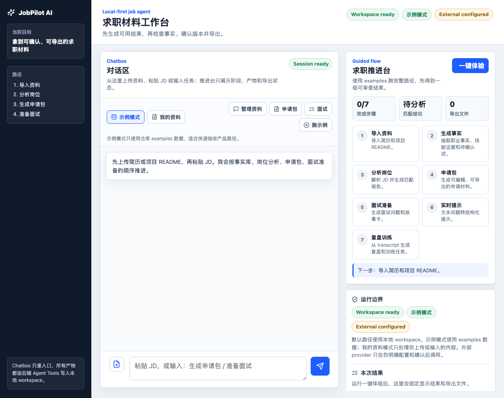
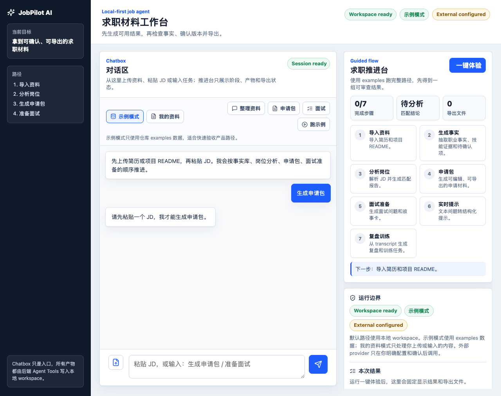
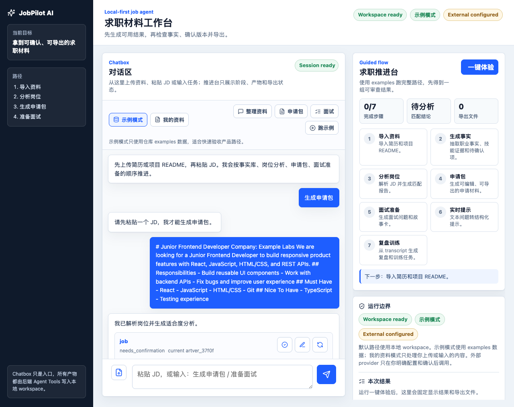
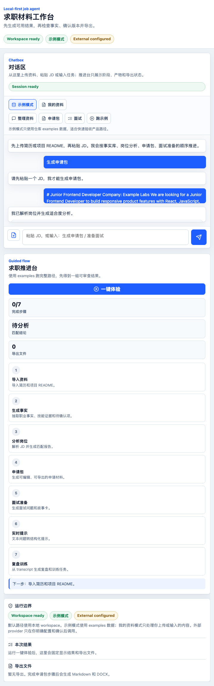
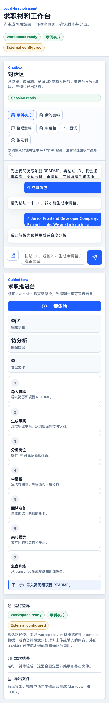

JobPilot AI 真实用户 Chatbox 体验验收报告
本报告基于本地代码、自动化测试、前端构建和 Chrome CDP 截图证据。报告只陈述已经执行和可验证的内容，不把 examples 真实感数据写成真实个人资料验收。
P3-M1 通过
P3-M2 通过
P3-M3 通过
P3-M4 通过
人工 UX 待优化
结论
当前验收结论
P3 已完成 Chatbox 响应闭环、模式边界、对话区/推进台分离和三档响应式截图验收；但人工审查对当前用户体验不完全认同，后续需要进入 UX 优化阶段。
测试结果
python3 -m pytest：61 passed。npm --prefix apps/chatbox run build：通过。
未验收声明
未声明真实个人资料自动验收通过；未声明 external provider 默认调用路径通过；未声明人工体验审查已完成或当前 UX 已被完全认可。
人工 UX 审查意见
审查结论
人工审查认可当前验收报告的大部分内容，但对当前用户体验不完全认同。P3 的自动化验收结论保留，但不能写成“人工体验已认可”。
后续阶段输入
P4 候选阶段应优先做 UX 体验优化，包括信息架构、任务入口、产物卡可读性、状态反馈、响应式细节和 before/after 人工审查包。
目标架构
目标模块
- Chatbox Client：输入、上传、状态、消息、产物卡、导出触发。
- Workbench：阶段、下一步、运行边界、结果摘要、导出状态。
- FastAPI Agent Service：chat/workflow/artifact/export/provider routes。
- ChatCore / Pi Agent Core：意图识别和业务编排。
- Domain Tools：事实库、JD 分析、申请包、面试准备、复盘。
- Storage / Artifact：SQLite、本地 workspace、artifact version、exports。
当前实现
- 前端已分离
conversation-area与workbench。 - Chatbox 不直接生成求职内容，不直连 SQLite，不直连 provider。
- 示例 workflow 强制
data_mode=example，拒绝my_data跑 examples demo。 - 截图脚本使用临时 workspace，避免污染用户本地数据。
- artifact card 保留确认、版本、编辑、重新生成和导出入口。
用户体验路径
打开 Chatbox
选择示例 / 我的资料
上传资料或粘贴 JD
看到响应或失败原因
查看推进台和产物
确认版本并导出
本轮自动截图覆盖了初始态、缺资料恢复态、JD 有效响应态、720px 窄屏和 390px 移动宽度。
截图证据

初始态：workspace、示例模式、provider configured 状态、对话区和推进台均可见。

缺资料态：未提供 JD 时输入“生成申请包”，系统提示先粘贴 JD，没有伪造申请包。

有效响应态：输入真实感 Junior Frontend JD 后，左侧展示响应与产物卡，右侧展示推进台。

720px：布局降为单栏，模块顺序可读。

390px：对话区优先，快捷任务换行，输入区可见，未发现严重横向裁切。
阶段完成情况
| 阶段 | 完成内容 | 证据 |
|---|---|---|
| P3-M1 | Chatbox 可见响应、空输入提示、缺资料恢复、JD 意图识别。 | test_p3_chatbox_response_eval.py，错误态/响应态截图。 |
| P3-M2 | 示例模式 / 我的资料模式边界，examples workflow 拒绝 my_data。 | test_p3_mode_boundary_eval.py，初始态截图。 |
| P3-M3 | 对话区与推进台分离，桌面双栏，移动对话优先。 | test_p3_artifact_workbench_eval.py，桌面/移动截图。 |
| P3-M4 | 响应式截图验收，PNG 尺寸证据固化。 | test_p3_responsive_evidence_eval.py。 |
测试与命令
| 命令 | 结果 |
|---|---|
python3 -m pytest | 61 passed |
npm --prefix apps/chatbox run build | 通过，Vite build 成功 |
node scripts/capture_p3_chatbox_evidence.mjs | 通过，生成 5 张 Chrome CDP 截图 |
未验证范围
本轮没有声明通过
- 真实个人简历 / 私有项目资料自动验收；
- MiniMax 或其他 external provider 默认调用路径；
- 人工主观体验审查完成；
- 当前用户体验已被人工完全认可；
- MCP、CLI、ASR、会议平台、自动海投、SaaS 多租户。
虚假验收风险控制
- 截图使用临时 workspace 和 examples 真实感数据；
- 报告明确区分 configured 与 called；
- 报告列出未验证范围；
- 每个子阶段都有 stage review 和自动化测试证据。